1 数据库基础
数据库、数据库管理系统、数据库系统、数据库管理员
- 数据库：DataBase（DB）是信息的集合。或者说，数据库是由数据库管理系统管理的数据的集合。
- 数据库管理系统：Database Management System（DBMS）是一种操纵和管理数据库的大型软件，通常用于建立、使用和维护数据库。
- 数据库系统：Data Base System（DBS）通常由软件、数据库和数据管理员组成。
- 数据库管理员：Database Administrator（DBA）负责全面管理和控制数据库系统。
元组、码、候选码、主码、外码、主属性、非主属性
元组：tuple是关系型数据库中的基本概念，关系是一张表，表中的每行（即数据库中的每条记录）就是一个元组，每列就是一个属性。 在二维表里，元组也称为行。
码：能唯一标识实体的属性，对应表中的列。
候选码：若关系中的某一个或某一组属性的值能唯一标识一个元组，而其任何子集都不能再标识，则称该属性组为候选码。
主码：primary key也叫主键。主码是从候选码中选出来的，一个实体集中只能有一个主码，但可以有多个候选码。
外码：foreign key也叫外键。如果一个关系中的一个属性是另外一个关系中的主码则这个属性为外码。
主属性：候选码中出现过的属性称为主属性。如果主码是一个属性组，那么属性组中的属性都是主属性。
非主属性：不包含在任何一个候选码中的属性称为非主属性。
主键和外键
- 主键(主码)：用于唯一标识一个元组，不能有重复，不允许为空。一个表只能有一个主键。
- 外键(外码)：用来和其他表建立联系用，外键是另一表的主键，外键是可以有重复的，可以是空值。一个表可以有多个外键。
为什么不推荐使用外键与级联？
级联：以学生和成绩的关系为例，学生表中的student_id是主键，那么成绩表中的student_id则为外键。如果更新学生表中的student_id，同时触发成绩表中的student_id更新，即为级联更新。
《阿里巴巴Java开发手册》中强制不得使用外键与级联，一切外键概念必须在应用层解决。
外键与级联更新适用于单机低并发，不适合分布式、高并发集群; 级联更新是强阻塞，存在数据库更新风暴的风险; 外键影响数据库的插入速度。
不使用外键的原因主要有：
- 增加了复杂性：每次做DELETE或者UPDATE都必须考虑外键约束，会导致开发的时候很痛苦，测试数据极为不便。且外键的主从关系是确定的，假如哪天需求有变化，数据库中的这个字段根本不需要和其他表有关联的话就会增加很多麻烦。
- 增加了额外工作：数据库需要增加维护外键的工作，比如当我们做一些涉及外键字段的增，删，更新操作之后，需要触发相关操作去检查，保证数据的的一致性和正确性，这样会不得不消耗资源。当然了，在应用层做检查也是一样会增加额外工作，因此这个理由比较牵强。
- 对分库分表不友好：因为分库分表下外键是无法生效的。
ER图
E-R图也称实体-联系图(Entity Relationship Diagram)，提供了表示实体类型、属性和联系的方法，是描述现实世界关系概念模型的有效方法，也是表示概念关系模型的一种方式。其中关系可以表示为1对1（1:1），1对多（1:N），多对多（N:N）。

范式
在关系型数据库中，关于数据表设计的基本原则、规则就称为范式（normal form）。可以理解为，一张数据表的设计结构需要满足的某种设计标准的级别。
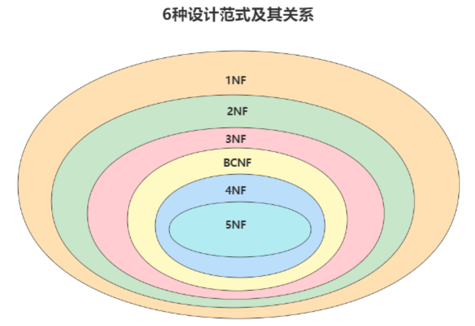第一范式1NF：强调的是列的原子性，即列不能够再分成其他几列。 1NF是所有关系型数据库的最基本要求。
考虑一个联系人表：联系人(姓名，性别，电话)
- 如果在实际场景中，一个联系人有家庭电话和公司电话，那么这种表结构设计就没有达到1NF。
- 只需把(电话)拆分，即联系人(姓名，性别，家庭电话，公司电话)。
第二范式2NF：2NF在1NF的基础之上，消除了非主属性对于码的部分函数依赖，即没有包含在主键中的列必须完全依赖于主键，而不能只依赖于主键的一部分。不符合2NF会带来数据冗余，插入、删除、更新的异常。
考虑一个订单明细表：OrderDetail(OrderID，ProductID，UnitPrice，Discount，Quantity，ProductName)。
- 在一个订单中可以订购多种产品，所以单单一个OrderID是不足以成为主键的，主键应该是(OrderID，ProductID)。显而易见Discount，Quantity完全依赖于主键(OderID，ProductID)，而UnitPrice，ProductName只依赖于ProductID。所以OrderDetail表不符合2NF。
- 可以把OrderDetail表拆分为OrderDetail(OrderID，ProductID，Discount，Quantity)和Product(ProductID，UnitPrice，ProductName)来消除原订单表中UnitPrice，ProductName多次重复的情况。
关于依赖：
- 函数依赖（functional dependency）：若在一张表中，在属性（或属性组）X的值确定的情况下，必定能确定属性Y的值，那么就可以说Y函数依赖于 X，写作X -> Y。
- 部分函数依赖（partial functional dependency）：如果X -> Y，并且存在X的一个真子集X
0，使得X0-> Y，则称Y对X部分函数依赖。比如学生表R(学号，身份证号，姓名)中，(学号，身份证号) -> (姓名)，但其中的(学号)/(身份证号) -> (姓名)，因此(姓名)部分依赖于(学号，身份证号)。 - 完全函数依赖（full functional dependency）：在一个关系中，若某个非主属性数据项依赖于全部关键字称之为完全函数依赖。比如地址表R(街道号，门牌号，户主)中，不同街道可以有同样的门牌，因此要确定户主必须(街道号，门牌号) -> (户主)，因此(户主)完全依赖于(街道号，门牌号)。
- 传递函数依赖（transitive functional dependency）：在关系模式R(U)中，设X，Y，Z是U的不同的属性子集，如果X确定Y、Y确定Z，且有X不包含Y，Y不确定X，（X∪Y）∩ Z = 空集合，则称 Z 传递函数依赖于X。传递函数依赖会导致数据冗余和异常。传递函数依赖的Y和Z子集往往同属于某一个事物，因此可将其合并放到一个表中。比如在关系R(学号 , 姓名, 系名，系主任)中，(学号) → (系名)，(系名) → (系主任)，所以存在非主属性(系主任)对于(学号)的传递函数依赖。。
第三范式3NF：3NF在2NF的基础之上，消除了非主属性对于码的传递函数依赖，即非主键列必须直接依赖于主键，不能存在传递依赖。
考虑一个订单表Order(OrderID，OrderDate，CustomerID，CustomerName，CustomerAddr，CustomerCity)，主键是(OrderID)。
- 其中OrderDate，CustomerID，CustomerName，CustomerAddr，CustomerCity等非主键列都完全依赖于主键，所以符合2NF。
- 不过问题是CustomerName，CustomerAddr，CustomerCity直接依赖的是CustomerID（非主键列），而不是直接依赖于主键，它是通过传递才依赖于主键，所以不符合3NF。
- 通过拆分Order为Order(OrderID，OrderDate，CustomerID)和Customer(CustomerID，CustomerName，CustomerAddr，CustomerCity)从而达到3NF。
巴斯科德范式BCNF：BCNF在3NF的基础上消除了主属性对候选键的部分依赖或者传递依赖关系。
第四范式4NF：消除多值依赖。
第五范式5NF：消除不是由候选键所蕴含的连接依赖。
存储过程
存储过程可以看成是一系列SQL语句的集合，中间加了逻辑控制语句。存储过程在业务比较复杂的时候是非常实用的，比如很多时候我们完成一个操作可能需要写一大串SQL语句，这时候我们就可以写有一个存储过程，方便下一次的调用。存储过程一旦调试完成通过后就能稳定运行，另外，使用存储过程比单纯SQL语句执行要快，因为存储过程是预编译过的。
但是存储过程在互联网公司应用不多，《阿里巴巴Java开发手册》要求禁止使用存储过程。
存储过程难以调试和扩展，更没有移植性。
2 MySQL基础
关系型数据库和MySQL
顾名思义，关系型数据库就是一种建立在关系模型基础上的数据库。关系模型表明了数据库中所存储的数据之间的联系（一对一、一对多、多对多）。关系型数据库中，我们的数据都被存放在了各种表中（比如用户表），表中的每一行就存放着一条数据（比如一个用户的信息）。
大部分关系型数据库都使用SQL来操作数据库中的数据，并且大部分关系型数据库都支持事务的四大特性（ACID）。常见的关系型数据库有MySQL、PostgreSQL、Oracle、SQL Server、SQLite（微信本地的聊天记录的存储就是用的SQLite）等。
MySQL是一种关系型数据库，主要用于持久化存储系统中的一些数据。MySQL是开源免费且比较成熟的数据库，因此被大量使用在各种系统中。任何人都可以在GPL(General Public License) 的许可下下载并根据个性化的需要对其进行修改。MySQL的默认端口号是3306。
drop、delete与truncate
用法不同：
drop table 表名：直接将表即表的结构都删除掉，在删除表的时候使用。truncate table 表名：只删除表中的数据，再插入数据的时候自增长id又从1开始，在清空表中数据的时候使用。delete from 表名 where 列名=值：删除某一行的数据，如果不加where子句和truncate作用类似。
属于不同的数据库语言类型：
truncate和drop属于 DDL（Data Definition Language）语句，操作立即生效，原数据不放到rollback segment中，不能回滚，操作不触发 trigger。delete语句是DML（Data Manipulation Language语句，操作会放到rollback segement中，事务提交之后才生效。
执行速度不同：
- 一般来说：
drop>truncate>delete delete命令执行的时候会产生数据库的binlog日志，而日志记录是需要消耗时间的，但是也有个好处方便数据回滚恢复。truncate命令执行的时候不会产生数据库日志，因此比delete要快。除此之外，还会把表的自增值重置和索引恢复到初始大小等。drop命令会把表占用的空间全部释放掉，因此是最快的。
字符集
字符是各种文字和符号的统称，包括各个国家文字、标点符号、表情、数字等等。
字符集就是一系列字符的集合。字符集的种类较多，每个字符集可以表示的字符范围通常不同。
计算机只能存储二进制的数据，我们要将这些字符和二进制的数据一一对应起来，比如说字符“a”对应“01100001”，反之，“01100001”对应“a”。我们将字符对应二进制数据的过程称为”字符编码”，反之，二进制数据解析成字符的过程称为“字符解码”。
不同的字符集的主要区别在于可以表示的字符范围和编码方式：
- ASCII（American Standard Code for Information Interchange）是一套主要用于现代美国英语的字符集，至今为止共定义了128个字符，其中有33个控制字符（比如回车、删除）无法显示。一个ASCII码长度是1个字节也就是8个bit。
- GB2312是一种对汉字比较友好的字符集，共收录6700多个汉字，基本涵盖了绝大部分常用汉字，不过GB2312字符集不支持绝大部分的生僻字和繁体字。对于英语字符，GB2312编码和ASCII码是相同的，1字节编码即可；对于非英字符，需要2字节编码。
- GBK（K是汉语拼音扩展中“Kuo”的首字母）可以看作是GB2312字符集的扩展，兼容GB2312字符集，共收录了20000多个汉字。
- GB18030完全兼容GB2312和GBK字符集，纳入中国国内少数民族的文字，且收录了日韩汉字，是目前为止最全面的汉字字符集，共收录汉字70000多个。
- BIG5主要针对的是繁体中文，收录了13000多个汉字。
为了更加适合本国语言，不同的国家地区诞生了很多种字符集，但是使用错误的编码方式查看一个包含字符的文件就会产生乱码现象。乱码的本质就是编码和解码时用了不同或者不兼容的字符集。
Unicode应运而生，Unicode字符集中包含了世界上几乎所有已知的字符，不过Unicode并没有规定如何用二进制存储这些字符。
然后，就有了UTF-8（8-bit Unicode Transformation Format），类似的还有UTF-16、UTF-32。UTF-8使用1到4个字节为每个字符编码，UTF-16使用2或4个字节为每个字符编码，UTF-32固定4个字节为每个字符编码。
UTF-8是目前使用最广的一种字符编码，可以根据不同的符号自动选择编码的长短，像英文字符只需要1个字节就够了，因此，对于英语字符UTF-8编码和ASCII码是相同的。
UTF-32的规则最简单，不过缺陷也比较明显，对于英文字母这类字符消耗的空间是UTF-8的4倍之多。
MySQL支持很多字符集，通常情况下建议使用UTF-8作为默认的字符编码方式。不过，MySQL字符编码集中有两套UTF-8编码实现：
- utf8：utf8编码只支持1-3个字节，在utf8编码中，中文是占 3 个字节，其他数字、英文、符号占一个字节。但emoji符号占4个字节，一些较复杂的文字、繁体字也是4个字节，默认的utf8无法正确存储。
- utf8mb4：UTF-8的完整实现！最多支持使用4个字节表示字符，因此，可以用来存储emoji符号。
3 数据目录
MySQL文件目录
以下是Linux中MySQL的主要文件路径：
- MySQL数据库文件的存放路径：
show variables like 'datadir';查看。一般在/var/lib/mysql/。 - 相关命令目录：
/usr/bin（mysqladmin、mysqlbinlog、mysqldump等命令）和/usr/sbin。 - 配置文件目录：
/usr/share/mysql-8.0（命令及配置文件），/etc/mysql（my.cnf等）。
MySQL系统自带数据库
SHOW DATABASES;可以查看到MySQL系统自带的数据库，主要有：
mysql：MySQL系统自带的核心数据库，存储MySQL的用户账户和权限信息，一些存储过程、事件的定义信息，一些运行过程中产生的日志信息，一些帮助信息以及时区信息等。information_schema：保存MySQL服务器维护的所有其他数据库的信息，比如有哪些表、哪些视图、哪些触发器、哪些列、哪些索引。这些信息并不是真实的用户数据，而是一些描述性信息，有时候也称之为元数据。在该数据库中提供了一些以innodb_sys开头的表，用于表示内部系统表。performance_schema：主要保存MySQL服务器运行过程中的一些状态信息，可以 用来监控MySQL服务的各类性能指标。包括统计最近执行了哪些语句，在执行过程的每个阶段都花费了多长时间，内存的使用情况等信息。sys：通过视图的形式把information_schema和performance_schema结合起来，帮助系统管理员和开发人员监控MySQL的技术性能。
在MySQL数据库文件存放路径下，除了information_schema这个系统数据库外，其他的数据库在数据目录下都有对应的子目录。
表在文件系统中的表示
InnoDB存储引擎模式
- 表结构
InnoDB存储引擎模式下，数据库子目录下会为每个表创建一个专门用于描述表结构的文件表名.frm，该文件以二进制格式存储。
- 表中数据和索引
默认情况下，InnoDB会在数据目录下创建一个名为ibdata1，大小为12M的文件，这个文件对应系统表空间在文件系统上的表示。MySQL 5.6.6以前数据库中各个表的数据都默认存储在系统表空间。这个文件初始大小只有12M，但是它是自扩展文件，当不够用时会自己增加文件大小。
在MySQL 5.6.6及之后的版本中，InnoDB并不会默认的把各个表的数据存储到系统表空间中，而是为每一个表建立一个独立表空间，也就是说创建了多少个表，就有多少个独立表空间。使用独立表空间来存储表数据时，会在该表所属数据库对应的子目录下创建一个表示该独立表空间的文件，文件名和表名相同，添加了一个.ibd的扩展名。而且InnoDB中数据即索引，不用再单独生成文件来保存索引。
比如在数据库temp下创建一个名为test的表，就会在数据目录的该数据库子目录下生成：
mysql/temp/test.frm # 描述表结构（8.0之后合并在ibd文件中）
mysql/temp/test.ibd # 独立表空间存储表数据的索引MyISAM存储引擎模式
- 表结构
MyISAM和InnoDB一样，也是在数据目录下对应的数据库子目录下创建了一个以.frm为后缀专门用于描述表结构的文件。
- 表中数据和索引
在MyISAM中索引全部都是二级索引，数据和索引是分开存放的，在文件系统中也是使用不同的文件来存储数据文件和索引文件，同时表数据也都存放在对应的数据库子目录下。
比如在数据库temp下创建一个名为test的表，就会在数据目录的该数据库子目录下生成：
mysql/temp/test.frm # 描述表结构
mysql/temp/test.MYD # 存储表数据
mysql/temp/test.MYI # 存储表文件4 逻辑架构
MySQL服务器进程对客户端的进程请求的处理流程：

MySQL的逻辑架构主要包括：
- Connectors：客户端链接程序。比如JDBC等。
- MySQL第1层 - 连接层：客户端访问MySQL服务器前做的第一件事就是建立TCP连接。经过三次握手建立连接成功后，MySQL服务器对TCP传输过来的账号密码做身份认证、权限获取。TCP连接收到请求后，必须要分配给一个线程专门与这个客户端的交互，所以还会有个线程池，去走后面的流程。每一个连接从线程池中获取线程，省去了创建和销毁线程的开销。
- MySQL第2层 - 服务层：
- SQL Interface：SQL接口。接收用户的SQL命令，并且返回用户需要查询的结果。
- Parser：解析器。对SQL语句进行语法分析、语义分析，并为其创建语法树，根据数据字典丰富查询语法树，验证该客户端是否具有执行该查询的权限。创建好语法树后，MySQL还会对SQL查询进行语法上的优化，进行查询重写。之后将这个结构传递到后续步骤。
- Optimizer：查询优化器。SQL语句在语法解析之后、查询之前会使用查询优化器确定SQL语句的执行路径，生成一个执行计划。这个执行计划表明应该使用哪些索引进行查询（全表检索还是使用索引检索），表之间的连接顺序如何等，最后会按照执行计划中的步骤调用存储引擎提供的方法来真正的执行查询，并将查询结果返回给用户。
- Caches & Buffers：查询缓存组件。MySQL内部维持着一些Cache和Buffer，比如Query Cache用来缓存一条SELECT语句的执行结果，如果能够在其中找到对应的查询结果，那么就不必再进行查询解析、优化和执行的整个过程了，直接将结果反馈给客户端。 从MySQL 5.7.20开始，不推荐使用查询缓存，并在MySQL 8.0中删除。
- MySQL第3层 - 引擎层：插件式存储引擎层（Storage Engines），真正负责MySQL中数据的存储和提取，对物理服务器级别维护的底层数据执行操作，服务器通过API与存储引擎进行通信。
- 存储层：所有的数据，数据库、表的定义，表的每一行的内容，索引，都是存在文件系统上，以文件的方式存在的，并完成与存储引擎的交互。
5 存储引擎
引擎介绍
InnoDB：具备外键支持功能的事务存储引擎
- MySQL从3.23.34a开始就包含InnoDB存储引擎，5.5之后，InnoDB成为默认的存储引擎。
- InnoDB是MySQL的默认事务型引擎，被设计用来处理大量的短期（short-lived）事务。可以确保事务的完整提交（Commit）和回滚（Rollback）。
- 除了增加和查询外，还需要更新和删除操作，那么应优先选择InnoDB存储引擎。除非有非常特别的原因需要使用其他的存储引擎，否则应该优先考虑InnoDB引擎。
- 数据文件结构：
表名.frm：存储表结构(MySQL8.0时，合并在表名.ibd中)。表名.ibd：存储数据和索引。
- InnoDB是为处理巨大数据量的最大性能设计。
- 对比MyISAM的存储引擎，InnoDB对写的处理效率差一些，并且会占用更多的磁盘空间以保存数据和索引。
- MyISAM只缓存索引，不缓存真实数据；InnoDB不仅缓存索引还要缓存真实数据，对内存要求较高，而且内存大小对性能有决定性的影响。
MyISAM：主要的非事务处理存储引擎
- MyISAM是5.5之前默认的存储引擎，提供了大量的特性，包括全文索引、压缩、空间函数(GIS)等，但MyISAM不支持事务、行级锁、外键，有一个毫无疑问的缺陷就是崩溃后无法安全恢复。
- 优势是访问的速度快，适合对事务完整性没有要求或者以SELECT、INSERT（只读）为主的应用。
- 针对数据统计有额外的常数存储。故而
count(*)的查询效率很高。 - 数据文件结构：
表名.frm：存储表结构表名.MYD：存储数据 (MYData)表名.MYI：存储索引 (MYIndex)
Memory：置于内存的表
- Memory采用的逻辑介质是内存，响应速度很快，但是当mysqld守护进程崩溃的时候 数据会丢失。
- 要求存储的数据是数据长度不变的格式，比如Blob和Text类型的数据就不可用(长度不固定的)。
- 同时支持哈希（HASH）和B+树索引。Memory表至少比MyISAM表要快一个数量级。
- 表的大小受到限制，主要取决于两个参数：
max_rows和max_heap_table_size，前者在创建表时指定，后者大小默认16MB，可以按需扩大。 - 数据文件与索引文件分开存储。
- 适用于目标数据比较小而且非常频繁访问，或者数据是临时的而且必须立即可用，或者表中数据突然丢失也没太大关系的场景。
其他引擎
Archive：用于数据存档。Blackhole：丢弃写操作，读操作会返回空内容。CSV：存储数据时，以逗号分隔各个数据项。Federated：访问远程表。Merge：管理多个MyISAM表构成的表集合。NDB：MySQL集群专用存储引擎。
MyISAM和InnoDB
- 锁粒度
MyISAM只有表级锁（table-level locking）；而InnoDB支持行级锁（row-level locking）和表级锁，默认为行级锁。
也就是说，MyISAM一锁就是锁住了整张表，这在并发写的情况下比InnoDB性能差太多。
- 事务支持
MyISAM不提供事务支持；InnoDB提供事务支持。
InnoDB实现了SQL标准定义了四个隔离级别，具有提交（commit）和回滚（rollback）事务的能力。并且InnoDB默认使用的REPEATABLE-READ（可重读）隔离级别，是可以解决幻读问题发生的（基于MVCC和Next-Key Lock）。
- 外键支持
MyISAM不支持；InnoDB支持。
外键对于维护数据一致性非常有帮助，但是对性能有一定的损耗。因此，通常情况下，我们是不建议在实际生产项目中使用外键的，在业务代码中进行约束即可！
- 数据库异常崩溃后的安全恢复
MyISAM不支持；InnoDB支持。
使用InnoDB的数据库在异常崩溃后，数据库重新启动的时候会保证数据库恢复到崩溃前的状态，这个恢复的过程依赖于redo log。
- MVCC
MyISAM不支持；InnoDB支持。
MVCC 可以看作是行级锁的一个升级，可以有效减少加锁操作，提高性能，而MyISAM连行级锁都不支持。
- 索引
MyISAM和InnoDB引擎都使用B+Tree作为索引结构，但是两者的实现方式不太一样。
InnoDB中，其数据文件本身就是索引文件，其表数据文件就是按B+Tree组织的一个索引结构，树的叶节点data域保存了完整的数据记录；MyISAM索引文件和数据文件是分离的。
6 索引
概述
MySQL官方对索引的定义为: 索引（Index）是帮助MySQL高效获取数据的数据结构。
索引的本质是一种数据结构。可以简单理解为「排好序的快速查找数据结构」，满足特定查找算法。这些数据结构以某种方式指向数据，这样就可以在这些数据结构的基础上实现高级查找算法。
优点：
- 提高数据检索效率，降低数据库I/O成本。
- 通过创建唯一索引，可以保证数据库表中每一行的数据唯一性。
- 可以加速表和表之间的连接，即对于有依赖关系的子表和父表联合查询时可以提高查询速度。
- 使用分组和排序子句进行数据查询时，可以显著减少查询分组和排序的时间，降低了CPU的消耗。
缺点：
- 创建索引和维护索引要耗费时间，并且随着数据量的增加，所耗费的时间也会增加。
- 除了数据表占数据空间之外，每一个索引也需要占磁盘空间，如果有大量的索引，索引文件就可能比数据文件更快达到最大文件尺寸。
- 虽然索引大大提高了查询速度，但同时却会降低更新表的更新速度。当对表中的数据进行增加、删除和修改的时候，索引也要动态地维护，这样就降低了数据的维护速度。
索引底层数据结构
Hash表
Hash表是键值对的集合，通过键(key)即可快速取出对应的值(value)，因此哈希表可以快速检索数据（接近O(1)）。
能够通过key快速取出value的原因在于Hash算法，Hash算法实现了key到index的映射：
hash = hashfunc(key)
index = hash % array_size因为数组的大小有限，Hash算法不可避免存在Hash冲突的问题，也就是说多个不同的key最后得到的index相同。常用的解决办法是拉链法（链地址法）。链地址法就是将哈希冲突数据存放在链表中。就比如JDK 1.8之前HashMap就是通过链地址法来解决哈希冲突的，1.8以后HashMap为了减少链表过长时搜索时间过长引入了红黑树。
为了减少Hash冲突的发生，一个好的哈希函数应该尽可能“均匀地”将数据分布在整个哈希值集合中。
但是，MySQL并没有使用Hash表作为索引的底层数据结构，原因在于：
- Hash冲突问题的存在，但这不是主要问题。
- Hash索引不支持顺序和范围查询！这是它最大的缺点。当我们要对表中的数据进行排序或者范围查找，Hash索引就不好使了。
虽然MyISAM和InnoDB都没有使用Hash索引，但是Memory引擎使用的恰好是Hash索引。
B树 & B+树
B树也称B-树（Hyphen，不是减号），全称为多路平衡查找树，B+树是B树的一种变体。B树和B+树中的B是Balanced，平衡。目前大部分数据库系统及文件系统都采用B-Tree或其变种B+Tree作为索引结构。
B树和B+树的异同：
- B树的所有节点既存放键(key) 也存放数据(data)；而B+树只有叶子节点存放key 和data，其他内节点只存放key。
- B树的叶子节点都是独立的；B+树的叶子节点有指针指向与它相邻的叶子节点。
- B树的检索的过程相当于对范围内的每个节点的关键字做二分查找，可能还没有到达叶子节点，检索就结束了；B+树的检索效率更稳定，任何查找都是从根节点到叶子节点的过程，叶子节点的顺序检索很明显。
在MySQL中，MyISAM和InnoDB都是使用B+Tree作为索引结构，但是两者的实现方式不太一样。
MyISAM引擎中，数据和索引是分开存放的，B+Tree叶节点的data域存放的是数据记录的地址。在索引检索的时候，首先按照B+Tree搜索算法搜索索引，如果指定的key存在，则取出其data域的值，然后以data域的值为地址读取相应的数据记录。即MyISAM中的索引是「非聚簇索引」。
InnoDB引擎中，数据即索引，其表数据文件本身就是按B+Tree组织的一个索引结构，树的叶节点data域保存了完整的数据记录。这个索引的key是数据表的主键，因此InnoDB 表数据文件本身就是主键索引，这被称为「聚簇索引」（或聚集索引）。而其余的索引都作为辅助索引（或二级索引，非聚簇索引），辅助索引的data域存储相应记录主键的值而不是地址（MyISAM存储的是地址值）。在根据主键索引搜索时，直接找到key所在的节点即可取出数据；在根据辅助索引查找时，则需要先取出主键的值，再走一遍主索引，此过程称为回表。因此，在设计表的时候不建议使用过长的字段作为主键，也不建议使用非单调的字段作为主键，这样会造成主索引频繁分裂（频繁插入数据引起）。
主键索引 & 二级索引
主键索引(Primary Key)
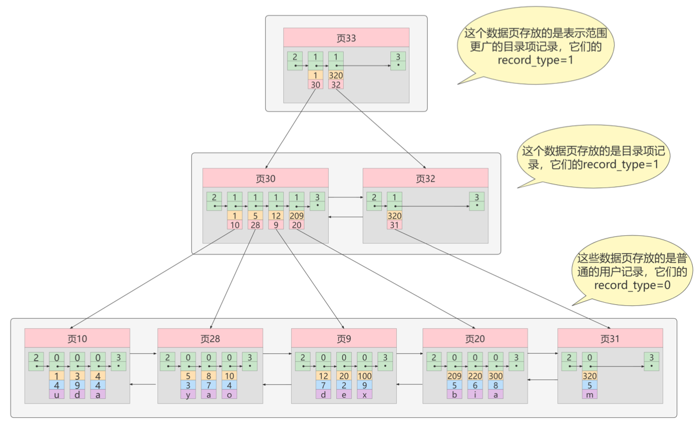数据表的主键列使用的就是主键索引。一张数据表有只能有一个主键，并且主键不能为 null，不能重复。
在InnoDB表中，当没有显式指定表的主键时，InnoDB会自动先检查表中是否有唯一索引且不允许存在null值的字段，如果有，则选择该字段为默认的主键，否则InnoDB将会自动创建一个6 Byte的自增主键。
二级索引(辅助索引)
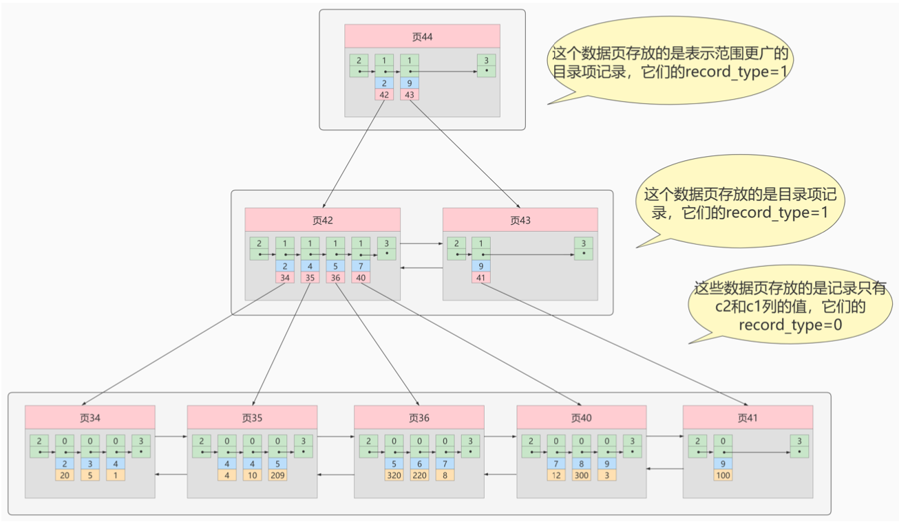二级索引的叶子节点存储的数据是主键。也就是说，通过二级索引，可以定位主键的位置。唯一索引，普通索引，前缀索引等索引属于二级索引。
- 唯一索引(Unique Key)：唯一索引也是一种约束。唯一索引的属性列不能出现重复的数据，但是允许数据为NULL，一张表允许创建多个唯一索引。建立唯一索引的目的大部分时候都是为了该属性列的数据的唯一性，而不是为了查询效率。
- 普通索引(Index)：普通索引的唯一作用就是为了快速查询数据，一张表允许创建多个普通索引，并允许数据重复和NULL。
- 前缀索引(Prefix)：前缀索引只适用于字符串类型的数据。前缀索引是对文本的前几个字符创建索引，相比普通索引建立的数据更小，因为只取前几个字符。
- 全文索引(Full Text)：全文索引主要是为了检索大文本数据中的关键字的信息，是目前搜索引擎数据库使用的一种技术。Mysql 5.6之前只有MyISAM引擎支持全文索引，5.6之后InnoDB也支持了全文索引。
联合索引
使用表中的多个字段创建索引，就是联合索引，也叫组合索引或复合索引。比如想让B+树按照c1和c2列的大小进行排序：
- 先把各个记录和页按照c1列进行排序。
- 在c1列相同的情况下，采用c2列进行排序。
聚簇索引 & 非聚簇索引
聚簇索引（聚集索引）
聚集索引即索引结构和数据一起存放的索引。主键索引属于聚集索引。
在MySQL中，InnoDB引擎的表的.ibd文件就包含了该表的索引和数据，该文件的底层数据结构就是B+树，将主键作为key组成索引，叶子结点存储的是完整的用户记录。
优点：
- 数据访问更快，因为聚簇索引将索引和数据保存在同一个B+树中。
- 聚簇索引对于主键的排序查找和范围查找速度非常快，因为不用回表。
- 范围查找时，由于数据都是紧密相连，数据库不用从多个数据块中提取数据，节省了大量的I/O操作。
缺点：
- 插入速度严重依赖于插入顺序，按照主键的顺序插入是最快的方式，否则将会出现页分裂，严重影响性能。因此对于InnoDB表，一般都会定义一个自增的ID列为主键。
- 更新主键的代价很高，因为将会导致被更新的行移动。因此对于InnoDB表，一般定义主键为不可更新。
- 二级索引访问需要两次索引查找，第一次找到主键值，第二次根据主键值找到行数据。
非聚簇索引（非聚集索引）
非聚集索引即索引结构和数据分开存放的索引。二级索引属于非聚集索引。
非聚集索引的叶子节点并不一定存放数据的指针（地址值），InnoDB表中二级索引的叶子节点存放的就是主键值，根据主键再回表到聚簇索引查数据。
优点：
- 更新代价比聚集索引要小，因为非聚集索引的叶子节点是不存放数据的。
缺点：
- 跟聚集索引一样，非聚集索引也依赖于有序的数据，频繁插入会导致频繁页分裂带来开销。
- 可能会二次查询（回表）。当查到索引对应的指针或主键后，可能还需要根据指针或主键值再到数据文件或表中查询，这应该是非聚集索引最大的缺点了。
覆盖索引
非聚簇索引不一定回表查询，比如用户使用SQL查询用户名，而用户名字段正好建立了索引。
SELECT name FROM table WHERE name='guang19';这个索引的key本身就是name，查到对应的name直接返回就行了，无需回表查询。
即使是MyISAM也存在不需要回表的情况。虽然MyISAM的主键索引是非聚簇索引，data域存储的是指针即数据的地址偏移量，但当SQL查的就是主键本身时也不需要回表了。
SELECT id FROM table WHERE id=1;上述情况称为覆盖索引：一个索引的key包含（或者说覆盖）所有需要查询的字段的值。覆盖索引的应用使得查询列与索引key对应时不需要再进行回表操作。
MyISAM与InnoDB对比
MyISAM的索引和文件是分开存储的，索引方式都是非聚簇的；InnoDB中索引即数据，按照B+树的结构根据主键建立了聚簇索引，同时叶子结点存储完整的用户记录。
- 在InnoDB存储引擎中，我们只需要根据主键值对聚簇索引进行一次查找就能找到对应的记录；而在MyISAM中却需要进行一次「回表」操作，意味着MyISAM中建立的索引相当于全部都是二级索引。
- InnoDB的数据文件本身就是索引文件；而MyISAM索引文件和数据文件是分离的，索引文件仅保存数据记录的地址。
- InnoDB的非聚簇索引data域存储相应记录主键的值；而MyISAM索引记录的是地址。
- MyISAM的回表操作是十分快速的，因为是拿着地址偏移量直接到文件中取数据的；反观InnoDB是通过获取主键值之后再去聚簇索引里搜索记录，虽然也不慢，但还是比不上直接用地址去访问。
- InnoDB要求表必须有主键，MyISAM可以没有。
创建索引的注意事项
- 选择合适的字段创建索引。
不为NULL的字段：索引字段的数据应该尽量不为NULL，因为对于数据为NULL的字段，数据库较难优化。如果字段频繁被查询，但又避免不了为NULL，建议使用0, 1, true, false这样语义较为清晰的短值或短字符作为替代。
被频繁查询的字段：我们创建索引的字段应该是查询操作非常频繁的字段。
被作为条件查询的字段：被作为WHERE条件查询的字段，应该被考虑建立索引。
频繁需要排序的字段：索引已经排序，这样查询可以利用索引的排序，加快排序查询时间。
被经常频繁用于连接的字段：经常用于连接的字段可能是一些外键列，对于外键列并不一定要建立外键，只是说该列涉及到表与表的关系。对于频繁被连接查询的字段，可以考虑建立索引，提高多表连接查询的效率。
- 被频繁更新的字段应该慎重建立索引。
虽然索引能带来查询上的效率，但是维护索引的成本也是不小的。 如果一个字段不被经常查询，反而被经常修改，那么就更不应该在这种字段上建立索引了。
- 尽可能的考虑建立联合索引而不是单列索引。
因为索引是需要占用磁盘空间的，可以简单理解为每个索引都对应着一颗B+树。如果一个表的字段过多，索引过多，那么当这个表的数据达到一个体量后，索引占用的空间也是很多的，且修改索引时，耗费的时间也是较多的。如果是联合索引，多个字段在一个索引上，那么将会节约很大磁盘空间，且修改数据的操作效率也会提升。
- 注意避免冗余索引。
冗余索引指的是索引的功能相同，能够命中索引(a, b)就肯定能命中索引(a) ，那么索引(a)就是冗余索引。如(name,city)和(name)这两个索引就是冗余索引，能够命中前者的查询肯定是能够命中后者的。在大多数情况下，都应该尽量扩展已有的索引而不是创建新索引。
- 考虑在字符串类型的字段上使用前缀索引代替普通索引。
前缀索引仅限于字符串类型，较普通索引会占用更小的空间，所以可以考虑使用前缀索引带替普通索引。
7 事务
事务（transaction）：一组逻辑操作单元，使数据从一种状态变换到另一种状态。
事务的处理原则是保证事务都作为一个工作单元来执行，即使出现了故障，都不能改变这种执行方式。当在一个事务中执行多个操作时，要么所有事务都被commit，使得这些修改就永久保存下来；要么放弃所作的所有更改，rollback到最初状态。
ACID
ACID：
原子性atomicity：指事务是一个不可分割的工作单位，要么全部提交，要么全部失败回滚到最初状态。
一致性consistency：指事务执行前后，数据从一个「合法性状态」变换到另外一个「合法性状态」。这种状态是语义上的而不是语法上的，跟具体的业务有关，满足预定的约束的状态就叫做合法的状态。通俗一点，这状态是由你自己来定义的（比如满足现实世界中的约束，转账必须转出账户减少，转入账户增加），满足这个状态，数据就是一致的，不满足这个状态，数据就是不一致的！如果事务中的某个操作失败了，系统就会自动撤销当前正在执行的事务，返回到事务操作之前的状态。
隔离性isolation：指一个事务的执行不能被其他事务干扰。即一个事务内部的操作及使用的数据对并发的其他事务是隔离的，并发执行的各个事务之间不能互相干扰。
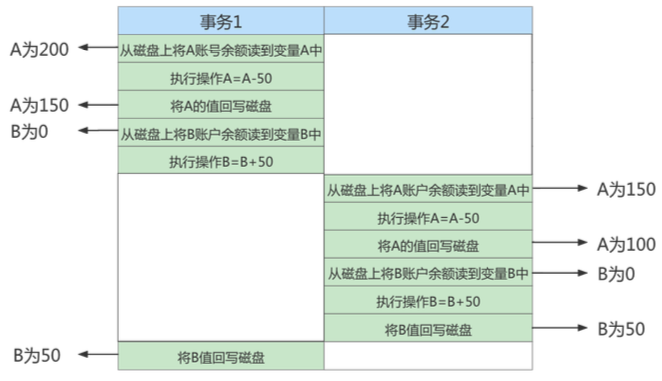
- 持久性durability：持久性是指一个事务一旦被提交，它对数据库中数据的改变就是永久性的，接下来的其他操作和数据库故障不应该对其有任何影响。持久性是通过日志来保证的。日志包括了redo日志和undo日志。通过事务对数据进行修改的时候，首先会将数据库的变化信息记录到redo日志中，然后再对数据库中对应的行进行修改。这样做的好处是即使数据库系统崩溃，数据库重启后也能找到没有更新到数据库系统中的redo日志，重新执行，从而使事务具有持久性。
只有保证了事务的持久性、原子性、隔离性之后，一致性才能得到保障。也就是说A、I、D是手段，C是目的！
事务状态
MySQL根据事务操作所执行的不同阶段把事务大致划分成几个状态:
- 活动的active：事务对应的数据库操作正在执行过程中。
- 部分提交的partially committed：当事务中的最后一个操作执行完成，但由于操作此时都在内存中执行，所造成的影响还没有刷新到磁盘。
- 失败的failed：事务处在
活动的或部分提交的状态时，可能遇到某些错误，比如数据库自身的错误、操作系统错误或者直接断电等，从而无法继续执行，或者人为停止当前事务的执行。 - 终止的aborted：如果事务执行了一部分而变为
失败的状态，那么就需要把已经修改的事务中的操作还原到事务执行前的状态，即撤销失败事务对当前数据库造成的影响。这个撤销的过程称之为回滚。当回滚操作执行完毕时，数据库就恢复到了执行事务之前的状态，我们就说该事务处在了中止的状态。 - 提交的committed：当一个处在
部分提交的状态的事务将修改过的数据都同步到磁盘上之后，我们就可以说该事务处在了提交的状态。
并发事务的问题
- 脏写(Dirty Write)
对于两个事务Session A、Session B，如果事务Session A修改了另一个未提交事务Session B修改过的数据，那就意味着发生了脏写。
- 脏读(Dirty Read)
对于两个事务Session A、Session B，Session A读取了已经被Session B更新但还没有被提交的字段。之后若Session B回滚，Session A读取的内容就是临时且无效的。
比如Session A和Session B各开启了一个事务，Session B中的事务先将studentno列为1的记录的name列更新为张三，然后Session A中的事务再去查询这条studentno为1的记录，如果读到列name的值为张三，而Session B中的事务稍后进行了回滚，那么Session A中的事务相当于读到了一个不存在的数据，这种现象就称之为脏读。
- 不可重复读(Non-Repeatable Read)
对于两个事务Session A、Session B，Session A读取了一个字段，然后Session B更新了该字段。之后Session A再次读取同一个字段，值就不同了。那就意味着发生了不可重复读。
比如我们在Session B中提交了几个隐式事务 (隐式事务意味着语句结束事务就提交了)，这些事务都修改了studentno列为1的记录的列name的值，每次事务提交之后，如果Session A中的事务都可以读取查看到最新的值，这种现象也被称之为不可重复读 。
- 幻读(Phantom Read)
对于两个事务Session A、Session B，Session A从一个表中读取了一个字段，然后 Session B在该表中插入了一些新的行。之后, 如果Session A再次读取同一个表，就会多出几行，那就意味着发生了幻读。
比如Session A中的事务先根据条件studentno > 0这个条件查询表student，得到了name列值为张三的记录；之后Session B中提交了一个隐式事务，该事务向表student中插入了一条新记录；之后Session A中的事务再根据相同的条件studentno > 0查询表student，得到的结果集中包含Session B中的事务新插入的那条记录，这种现象也被称之为幻读。我们把新插入的那些记录称之为幻影记录。
SQL中的四种隔离级别
上述的并发事务问题按严重程度排序：脏写 > 脏读 > 不可重复读 > 幻读。
对于这些问题不同程度的解决也就是SQL标准中设立的4种隔离级别：
READ UNCOMMITTED：读未提交。在该隔离级别，所有事务都可以看到其他未提交事务的执行结果。不能避免脏读、不可重复读、幻读。READ COMMITTED：读已提交。它满足了隔离的简单定义：一个事务只能看见已经提交事务所做的改变。这是大多数数据库系统的默认隔离级别(但不是MySQL默认的)。可以避免脏读，但不可重复读、幻读问题仍然存在。REPEATABLE READ：可重复读。事务A在读到一条数据之后，此时事务B对该数据进行了修改并提交，那么事务A再读该数据，读到的还是原来的内容。可以避免脏读、不可重复读，但幻读问题仍然存在。这是MySQL的默认隔离级别。SERIALIZABLE：可串行化。确保事务可以从一个表中读取相同的行。在这个事务持续期间，禁止其他事务对该表执行插入、更新和删除操作。所有的并发问题都可以避免，但性能十分低下。能避免脏读、不可重复读和幻读。
脏写怎么没涉及到？因为脏写这个问题太严重了，不论是哪种隔离级别，都不允许脏写的情况发生。
不同的隔离级别有不同的现象，并有不同的锁和并发机制，隔离级别越高，数据库的并发性能就越差。
8 锁
事务的隔离性由锁或MVCC来实现。在数据库中，除传统的计算资源(如CPU、RAM、I/O等)的争用以外，数据也是一种供许多用户共享的资源，为保证数据的一致性，需要对并发操作进行控制，因此产生了锁。同时锁机制也为实现MySQL的各个隔离级别提供了保证，锁冲突也是影响数据库并发访问性能的一个重要因素。
并发事务访问相同记录的情况
读-读情况
读-读情况，即并发事务相继读取相同的记录，读取操作本身不会对记录有任何影响，并不会引起什么问题，所以允许这种情况的发生。
写-写情况
写-写情况，即并发事务相继对相同的记录做出改动。在这种情况下会发生脏写的问题，任何一种隔离级别都不允许这种问题的发生。
所以在多个未提交事务相继对一条记录做改动时，需要让它们排队执行，这个排队的过程其实是通过锁来实现的。这个所谓的锁其实是一个内存中的结构，在事务执行前本来是没有锁的，也就是说一开始是没有锁结构和记录进行关联。当一个事务想对这条记录做改动时，首先会看看内存中有没有与这条记录关联的锁结构，当没有的时候就会在内存中生成一个锁结构与之关联。比如，事务T1要对这条记录做改动，就需要生成一个锁结构与之关联:
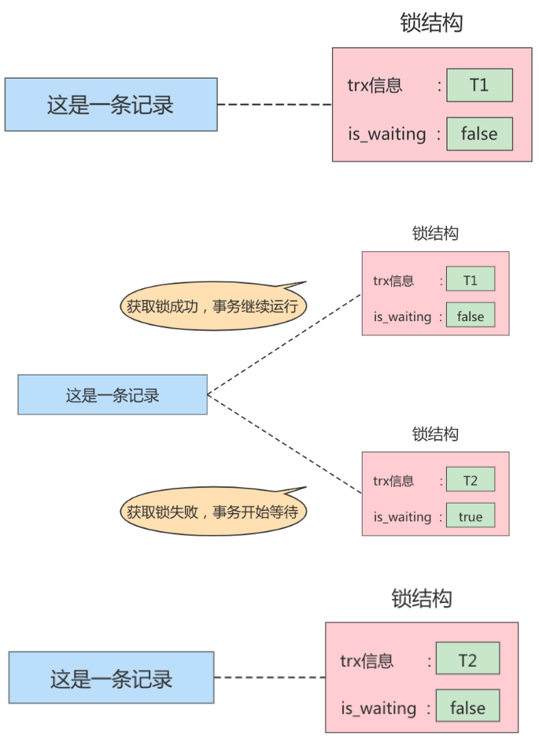
读-写或写-读情况
读-写或写-读，即一个事务进行读取操作，另一个进行改动操作。这种情况下可能发生脏读、不可重复读、幻读的问题。
各个数据库厂商对SQL标准的支持都可能不一样，比如MySQL在REPEATABLE READ隔离级别上就已经解决了幻读问题。
解决脏读、不可重复读、幻读这些问题其实有两种可选的解决方案:
- 读操作利用多版本并发控制(MVCC ，下章讲解)，写操作进行加锁。
- 读、写操作都采用加锁的方式。
采用MVCC方式的话，读-写操作彼此并不冲突；采用加锁方式的话，读-写操作彼此需要排队执行，影响性能。一般情况下我们当然愿意采用MVCC来解决读-写操作并发执行的问题，但是业务在某些特殊情况下，要求必须采用加锁的方式执行。
锁的分类
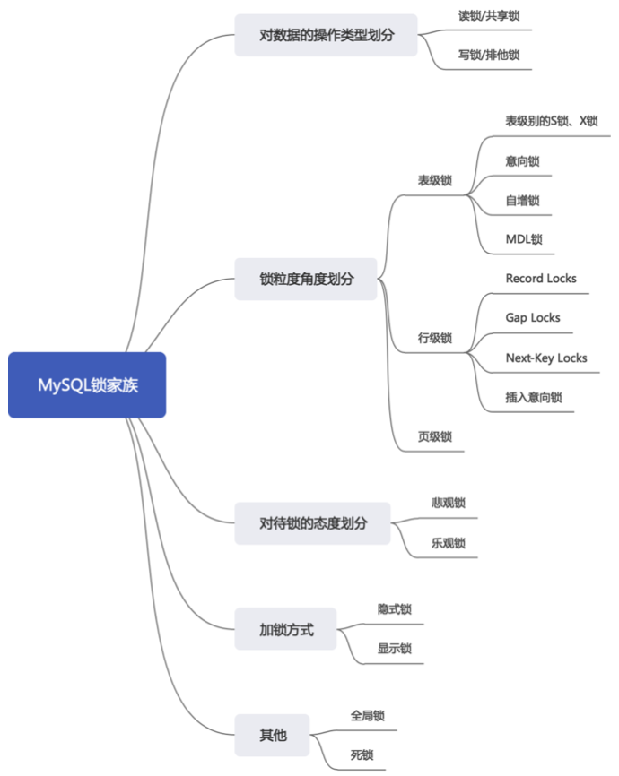
从数据操作的类型划分：读锁、写锁
读锁：也称为共享锁，英文用S表示。针对同一份数据，多个事务的读操作可以同时进行而不会 互相影响，相互不阻塞的。
写锁：也称为排他锁，英文用X表示。当前写操作没有完成前，它会阻断其他写锁和读锁，确保在给定的时间里，只有一个事务能执行写入，并防止其他用户读取正在写入的同一资源。
需要注意的是对于InnoDB引擎来说，读锁和写锁可以加在表上，也可以加在行上。
从数据操作的粒度划分：表级锁、页级锁、行级锁
表级锁和行级锁对比：
- 表级锁：MySQL中锁定粒度最大的一种锁，是针对非索引字段加的锁，对当前操作的整张表加锁。实现简单，资源消耗也比较少，加锁快，不会出现死锁。其锁定粒度最大，触发锁冲突的概率最高，并发度最低，MyISAM和InnoDB引擎都支持表级锁。
- 行级锁：MySQL中锁定粒度最小的一种锁，是针对索引字段加的锁，只针对当前操作的记录进行加锁。行级锁能大大减少数据库操作的冲突，其加锁粒度最小，并发度高，但加锁的开销也最大，加锁慢，会出现死锁。只有InnoDB引擎支持表级锁。
表锁(Table Lock)
- 表级别的S锁、X锁
MyISAM中锁粒度是在表级，表锁有两种模式，即表共享读锁(Table Read Lock)和表独占写锁(Table Write Lock)。
而InnoDB的锁粒度是在行级，在对某个表执行SELECT、INSERT、DELETE、UPDATE语句时，InnoDB存储引擎是不会为这个表添加表级别的S锁或者X锁的。
但是server层使用的一种称之为元数据锁 (Metadata Locks，简称MDL)结构的存在，使得在对某个表执行一些诸如ALTER TABLE、DROP TABLE这类DDL语句时，其他事务对这个表并发执行诸如SELECT、INSERT、DELETE、UPDATE的语句会发生阻塞；某个事务中对某个表执行SELECT、INSERT、DELETE、UPDATE语句时，在其他会话中对这个表执行DDL语句也会发生阻塞。
- 意向锁 (intention lock)
InnoDB支持多粒度锁(multiple granularity locking)，它允许行级锁与表级锁共存，而意向锁就是其中的一种表锁，它被用来快速判断是否可以对表使用表锁。
比如事务T1和T2，T1给表中某一条记录加了X锁，如果T2此时试图在该表级别上应用S/X锁，在没有意向锁的情况下，T2需要遍历检查每个页或每条记录是否存在锁，效率低下；在意向锁存在的情况下，T1给记录加X锁时，InnoDB引擎自动给表加上了意向排它锁即IX锁，T2检查到这个IX锁的存在就阻塞了。
简单来说，意向锁就是InnoDB在用户给某一行记录上锁时，自动对更大一级空间，比如数据页或数据表加上的锁，告诉其他人这个页或表中已经有人上过相应的锁了。
意向锁分为两种：
- 意向共享锁(intention shared lock, IS)：事务有意向对表中的某些行加共享锁(S锁)，要获取某些行的
S锁，必须先获得表的IS锁。 - 意向排它锁(intention exclusive lock, IX)：事务有意向对表中的某些行加排他锁(X锁)，要获取某些行的
X锁，必须先获得表的IX锁。
注意：
- 意向锁是由存储引擎自己维护的，用户无法手动操作意向锁，在为数据行加共享/排他锁之前，InooDB会先获取（添加）该数据行所在数据表的意向锁。
- 意向锁不会与行级的共享/排他锁互斥！正因为如此，意向锁并不会影响到多个事务对不同数据行加排他锁时的并发性。
- 但是在表级，除了IS锁与表级S锁兼容外，其余意向锁和S/X锁都是互斥关系。
- 意向锁在保证并发性的前提下，实现了行锁与表锁共存且满足事务隔离性的要求。
- 自增锁(AUTO-INC锁)
在使用MySQL过程中，我们可以为表的某个列添加AUTO_INCREMENT属性，AUTO-INC锁就是在使用含有AUTO_INCREMENT列的表中插入数据时需要获取的特殊的表级锁。执行INSERT语句时就先获取AUTO-INC锁，执行完再释放掉。
一个事务在持有AUTO-INC锁的过程中，其他事务的插入语句都要阻塞，从而保证分配的递增值是连续且不重复的，但显然也会降低并发性。InnoDB通过innodb_autoinc_lock_mode字段值来分别对应不同的锁定模式：
innodb_autoinc_lock_mode = 0(“传统”锁定模式)：所有类型的INSERT语句都要获得AUTO-INC锁才能进行插入。innodb_autoinc_lock_mode = 1(“连续”锁定模式)：对于“Simple inserts”(简单插入)，即通过INSERT...VALUES()语句的插入，因为插入数据条数已知，通过mutex(轻量锁)的控制下获得所需数量的自动递增值来避免表级AUTO-INC锁；对于“Bulk inserts” (批量插入)，即通过INSERT...SELECT语句的插入，因为插入数据条数未知，同一时刻还是只能有一条语句持有AUTO-INC锁。innodb_autoinc_lock_mode = 2(“交错”锁定模式)：所有类型INSERT语句都不使用AUTO-INC锁，这是并发度最高的模式。自动递增值保证在所有并发执行的INSERT语句中是唯一且单调递增的，但是可能不是连续的。
- 元数据锁(Metadata Locks，简称MDL)
MDL的作用是保证读写的正确性，解决DML和DDL操作的一致性问题，在访问表时会自动加上。
比如当一个查询正在遍历一个表中的数据，而执行期间另一个线程对这个表结构做变更，增加了一列，那么查询线程拿到的结果跟表结构对不上，肯定是不行的。
因此当对一个表做增删改查操作的时候，要加MDL读锁；当要对表做结构变更操作的时候，加MDL写锁。
InnoDB中的行锁
- 记录锁(Record Locks)
记录锁也就是仅仅把一条记录锁上，对其他记录没有影响。官方的类型名称为LOCK_REC_NOT_GAP。
记录锁是有S锁和X锁之分的，称之为S型记录锁和X型记录锁。
- 当一个事务获取了一条记录的S型记录锁后，其他事务也可以继续获取该记录的S型记录锁，但不可以继续获取X型记录锁;
- 当一个事务获取了一条记录的X型记录锁后，其他事务既不可以继续获取该记录的S型记录锁，也不可以继续获取X型记录锁。
- 间隙锁(Gap Locks)
MySQL在REPEATABLE READ隔离级别下是可以解决幻读问题的，解决方案有两种，可以使用 MVCC方案解决，也可以采用加锁方案解决。但是在使用加锁方案解决时有个大问题，就是事务在第一次执行读取操作时，那些幻影记录尚不存在，我们无法给这些幻影记录加上记录锁。
InnoDB提出了一种称之为Gap Locks的锁，官方的类型名称为LOCK_GAP，gap锁的提出就是为了防止插入幻影记录而提出的。
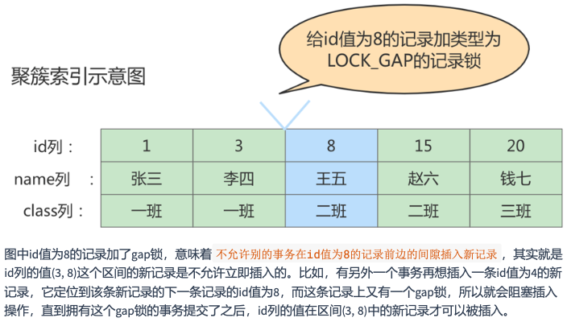
- 临键锁(Next-Key Locks)
有时候我们既想锁住某条记录，又想阻止其他事务在该记录前边的间隙插入新记录，所以InnoDB提出Next-Key Locks的锁，官方名称为LOCK_ORDINARY，简称为next-key锁。Next-Key Locks是在存储引擎InnoDB、事务级别在REPEATABLE READ的情况下使用的数据库锁，也是InnoDB默认的锁。
简而言之，Next-Key Locks就是记录锁和间隙锁的合体！
- 插入意向锁(Insert Intention Locks)
一个事务在插入一条记录时需要判断插入位置是不是被别的事务加了gap锁，如果有的话，插入需要等待直到拥有这个gap锁的事务提交。
但是InnoDB还规定想要插入的事务在等待的时候也需要在内存中生成一个锁，表明事务想在某个间隙中插入新记录，只是现在处于等待状态。这种锁类型就称为Insert Intention Locks，官方名称LOCK_INSERT_INTENTION，称为插入意向锁。
插入意向锁本质是在插入记录前因为INSERT操作产生的一种一种gap锁，不是意向锁。事实上 插入意向锁并不会阻止别的事务继续获取该记录上任何类型的锁。
页锁
页锁就是在页的粒度上进行锁定，锁定的数据资源比行锁要多，因为一个页中可以有多个行记录
使用页锁的时候会出现数据浪费的现象，但这样的浪费最多也就是一个页上的数据行。页锁的开销 介于表锁和行锁之间，会出现死锁。锁定粒度介于表锁和行锁之间，并发度一般。
锁升级
每个层级的锁数量是有限制的，因为锁会占用内存空间，锁空间的大小是有限的。当某个层级的锁数量超过了这个层级的阈值时，就会进行锁升级。锁升级就是用更大粒度的锁替代多个更小粒度的锁，比如InnoDB中行锁升级为表锁，这样做的好处是占用的锁空间降低了，但同时数据的并发度也下降了。
从对待锁的态度划分：乐观锁、悲观锁
从对待锁的态度来看锁的话，可以将锁分成乐观锁和悲观锁，这两种锁是两种看待数据并发的思维方式。需要注意的是，乐观锁和悲观锁并不是具体的锁，只是锁的设计思想。
悲观锁(Pessimistic Locking)
悲观锁顾名思义，就是很悲观，对数据被其他事务的修改持保守态度，会通过数据库自身的锁机制来实现对并发事务，从而保证数据操作的排它性。
悲观锁总是假设最坏的情况，每次去拿数据的时候都认为别人会修改，所以每次在拿数据的时候都会上锁，这样别人想拿这个数据就会阻塞 直到它拿到锁(共享资源每次只给一个线程使用，其它线程阻塞，用完后再把资源转让给其它线程)。
比如行锁，表锁等，读锁，写锁等，都是在做操作之前先上锁，当其他线程想要访问数据时，都需要阻塞挂起。Java中synchronized和ReentrantLock等独占锁也是悲观锁思想的实现。
乐观锁(Optimistic Locking)
乐观锁认为对同一数据的并发操作不会总发生，属于小概率事件，不用每次都对数据上锁，但是在更新的时候会判断一下在此期间别人有没有去更新这个数据，也就是不采用数据库自身的锁机制，而是通过程序来实现。在程序上，我们可以采用版本号机制或者CAS机制（compare and swap）实现。
乐观锁适用于多读的应用类型，这样可以提高吞吐量 。在Java中java.util.concurrent.atomic包下的原子变量类就使用了CAS机制实现乐观锁。
- 乐观锁的版本号机制
在表中设计一个版本号字段version，第一次读的时候会获取version字段的取值。然后对数据进行更新或删除操作时，会执行UPDATE ... SET version = version + 1 WHERE version = version。此时如果已经有事务对这条数据进行了更改，修改就不会成功。
- 乐观锁的时间戳机制
时间戳和版本号机制一样，也是在更新提交的时候，将当前数据的时间戳和更新之前取得的时间戳进行比较，如果两者一致则更新成功，否则就是版本冲突。
两种锁的适用场景
- 乐观锁适合读操作多的场景，相对来说写的操作比较少。它的优点在于程序实现，不存在死锁 问题，不过适用场景也会相对乐观，因为它阻止不了除了程序以外的数据库操作。
- 悲观锁适合写操作多的场景，因为写的操作具有排它性。采用悲观锁的方式，可以在数据库层 面阻止其他事务对该数据的操作权限，防止读-写和写-写的冲突。
9 MVCC
MVCC (Multiversion Concurrency Control)**，多版本并发控制。顾名思义，MVCC是通过数据行的多个版本管理来实现数据库的并发控制**。这项技术使得在InnoDB的事务隔离级别下执行一致性读操作有了保证，换言之就是为了查询一些正在被另一个事务更新的行，并且可以看到它们被更新之前的值，这样在做查询的时候就不用等待另一个事务释放锁。
快照读 & 当前读
MVCC在InnoDB中的实现主要是为了提高数据库并发性能，用更好的方式去处理读-写冲突，做到即使有读写冲突时，也能做到不加锁，非阻塞并发读。
而这个读指的就是快照读，而非当前读。当前读实际上是一种加锁的操作，是悲观锁的实现。而MVCC本质是采用乐观锁思想的一种方式。
- 快照读
快照读又叫一致性读，读取的是快照数据。不加锁的简单的SELECT都属于快照读，即不加锁的非阻塞读。比如：
SELECT * FROM player WHERE ...既然是基于多版本，那么快照读可能读到的并不一定是数据的最新版本，而有可能是之前的历史版本。快照读的前提是隔离级别不是SERIALIZABLE，SERIALIZABLE级别下的快照读会退化成当前读。
- 当前读
当前读读取的是记录的最新版本(最新数据，而不是历史版本的数据)，读取时还要保证其他并发事务不能修改当前记录，会对读取的记录进行加锁。加锁的SELECT，或者对数据进行增删改都会进行当前读。比如:
SELECT * FROM student LOCK IN SHARE MODE; # 共享锁
SELECT * FROM student FOR UPDATE; # 排他锁
INSERT INTO student values ... # 排他锁
DELETE FROM student WHERE ... # 排他锁
UPDATE student SET ... # 排他锁再谈隔离级别
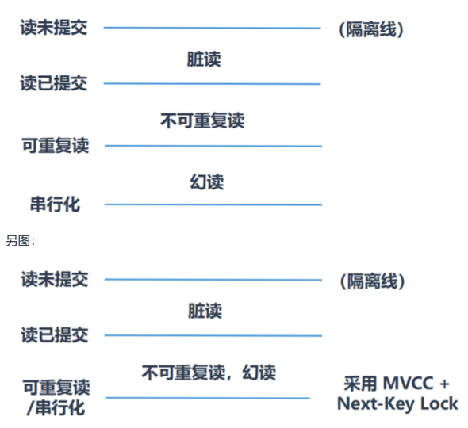
MySQL默认隔离级别是REPEATABLE READ，能解决脏读和不可重复读的问题，但是解决不了幻读问题，通过MVCC，可以在这个隔离级别下采用乐观锁的思想来解决幻读问题，代替行级锁，降低系统开销，提高并发度。
隐藏字段、Undo Log版本链
对于使用InnoDB存储引擎的表来说，它的聚簇索引记录中都包含两个必要的隐藏列：
trx_id：每次一个事务对某条聚簇索引记录进行改动时，都会把该事务的事务id赋值给trx_id隐藏列。roll_pointer：每次对某条聚簇索引记录进行改动时，都会把旧的版本写入到undo log中，然后隐藏列roll_pointer就相当于一个指针，可以通过它来找到该记录修改前的信息。
每次对记录进行改动，都会记录一条undo log，每条undo log也都有一个roll_pointer属性(INSERT操作对应的undo log没有该属性，因为该记录并没有更早的版本)，可以将这些undo log都连起来，串成一个链表，我们把这个链表称之为版本链，版本链的头节点就是当前记录最新的值，每个版本中还包含生成该版本时对应的事务id。
ReadView
MVCC的实现依赖于：隐藏字段、Undo Log和ReadView。
ReadView就是事务在使用MVCC机制进行快照读操作时产生的读视图，当事务启动时，会生成数据库系统当前的一个快照，InnoDB为每个事务构造了一个数组，用来记录并维护系统当前活跃事务的ID（「活跃」指的是启动了还没提交）。
设计思路
使用READ UNCOMMITTED隔离级别的事务，由于可以读到未提交事务修改过的记录，所以直接读取记录的最新版本就好了。
使用SERIALIZABLE隔离级别的事务，InnoDB规定使用加锁的方式来访问记录。
使用READ COMMITTED和REPEATABLE READ隔离级别的事务，都必须保证读到已经提交了的事务修改过的记录。假如另一个事务已经修改了记录但是尚未提交，是不能直接读取最新版本的记录的，核心问题就是需要判断一下版本链中的哪个版本是当前事务可见的，这是ReadView要解决的主要问题。
ReadView中主要包含4个重要内容:
creator_trx_id：创建这个ReadView的事务ID。- 只有在对表中的记录做改动时(
INSERT、DELETE、UPDATE这些语句时)才会为事务分配事务id，否则在一个只读事务中的事务id值都默认为0。
- 只有在对表中的记录做改动时(
trx_ids：表示在生成ReadView时当前系统中活跃的读写事务的事务id列表。up_limit_id：活跃的事务中最小的事务ID。low_limit_id：表示生成ReadView时系统中应该分配给下一个事务的id。low_limit_id是系统最大的事务id值，这里要注意是系统中的事务id，需要区别于正在活跃的事务ID。
ReadView的规则
有了这个ReadView，这样在访问某条记录时，只需要按照下边的步骤判断记录的某个版本是否可见：
- 如果被访问版本的
trx_id= ReadView中的creator_trx_id，意味着当前事务在访问它自己修改过的记录，所以该版本可以被当前事务访问。 - 如果被访问版本的
trx_id< ReadView中的up_limit_id，表明生成该版本的事务在当前事务生成ReadView前已经提交，所以该版本可以被当前事务访问。 - 如果被访问版本的
trx_id>= ReadView中的low_limit_id，表明生成该版本的事务在当前事务生成ReadView后才开启，所以该版本不可以被当前事务访问。 - 如果被访问版本的
trx_id>=up_limit_id&&trx_id<low_limit_id，那就需要判断一下trx_id属性值是不是在trx_ids列表中。- 如果在，说明创建ReadView时生成该版本的事务还是活跃的，该版本不可以被访问。
- 如果不在，说明创建ReadView时生成该版本的事务已经被提交，该版本可以被访问。
MVCC整体操作流程
当查询一条记录的时候，系统如何通过MVCC找到它:
- 首先获取事务自己的版本号，也就是事务ID;
- 获取ReadView;
- 查询得到的数据，然后与ReadView中的事务版本号进行比较;
- 如果不符合ReadView规则，就需要从Undo Log中获取历史快照;
- 最后返回符合规则的数据。
MVCC只能在读已提交和可重复读两个隔离级别下工作：
- 在隔离级别为
READ COMMITTED时，一个事务中的每一次SELECT查询都会重新获取一次ReadView。 - 当隔离级别为
REPEATABLE READ时，就可以避免不可重复读，因为一个事务只在第一次SELECT的时候会获取一次ReadView，而后面所有的SELECT都会复用这个ReadView。
MVCC解决脏读
在隔离级别为READ COMMITTED时，一个事务中的每一次SELECT查询都会重新获取一次ReadView。
现在有两个事务id分别为10、20的事务在执行：
# Transaction 10
BEGIN;
UPDATE student SET name="李四" WHERE id=1; UPDATE student SET name="王五" WHERE id=1;
# Transaction 20
BEGIN;
# 更新了一些别的表的记录 ...此刻，表student中id为1的记录得到的版本链表如下所示:
假设现在有一个使用READ COMMITTED隔离级别的事务开始执行:
# 使用READ COMMITTED隔离级别的事务 BEGIN;
# SELECT1:Transaction 10、20未提交
SELECT * FROM student WHERE id = 1; # 得到的列name的值为'张三'之后，我们把事务id为10的事务提交一下:
# Transaction 10
BEGIN;
UPDATE student SET name="李四" WHERE id=1;
UPDATE student SET name="王五" WHERE id=1; COMMIT;然后再到事务id为20的事务中更新一下表student中id为1的记录:
# Transaction 20
BEGIN;
# 更新了一些别的表的记录
...
UPDATE student SET name="钱七" WHERE id=1;
UPDATE student SET name="宋八" WHERE id=1;此刻，表student中id为1的记录的版本链就长这样：
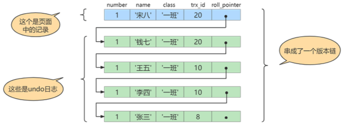
然后再到刚才使用READ COMMITTED隔离级别的事务中继续查找这个id为1的记录，如下：
# 使用READ COMMITTED隔离级别的事务 BEGIN;
# SELECT1:Transaction 10、20均未提交
SELECT * FROM student WHERE id = 1; # 得到的列name的值为'张三'
# SELECT2:Transaction 10提交，Transaction 20未提交
SELECT * FROM student WHERE id = 1; # 得到的列name的值为'王五'MVCC解决不可重复读
当隔离级别为REPEATABLE READ时，就可以避免不可重复读，因为一个事务只在第一次SELECT的时候会获取一次ReadView，而后面所有的SELECT都会复用这个ReadView。
比如，系统里有两个事务id分别为10、20的事务在执行:
# Transaction 10
BEGIN;
UPDATE student SET name="李四" WHERE id=1; UPDATE student SET name="王五" WHERE id=1;
# Transaction 20
BEGIN;
# 更新了一些别的表的记录 ...此刻，表student中id为1的记录得到的版本链表如下所示：
假设现在有一个使用REPEATABLE READ隔离级别的事务开始执行：
# 使用REPEATABLE READ隔离级别的事务 BEGIN;
# SELECT1:Transaction 10、20未提交
SELECT * FROM student WHERE id = 1; # 得到的列name的值为'张三'之后，我们把事务id为10的事务提交一下，就像这样：
# Transaction 10
BEGIN;
UPDATE student SET name="李四" WHERE id=1;
UPDATE student SET name="王五" WHERE id=1;
COMMIT;然后再到事务id为20的事务中更新一下表student中id为1的记录：
# Transaction 20
BEGIN;
# 更新了一些别的表的记录
...
UPDATE student SET name="钱七" WHERE id=1;
UPDATE student SET name="宋八" WHERE id=1;此刻，表student中id为1的记录的版本链就长这样：
然后再到刚才使用REPEATABLE READ隔离级别的事务中继续查找这个id为1的记录，如下：
# 使用REPEATABLE READ隔离级别的事务 BEGIN;
# SELECT1:Transaction 10、20均未提交
SELECT * FROM student WHERE id = 1; # 得到的列name的值为'张三'
# SELECT2:Transaction 10提交，Transaction 20未提交
SELECT * FROM student WHERE id = 1; # 得到的列name的值仍为'张三'MVCC解决幻读
还是在REPEATABLE READ隔离级别下。假设现在表student中只有一条数据，数据内容中，主键id=1，隐藏的trx_id=10，它的undo log如下图：
假设现在有事务A和事务B并发执行，事务A的事务id为20，事务B的事务id为30。
步骤1：事务A开始第一次查询数据，查询的SQL语句如下。
select * from student where id >= 1;在开始查询之前，MySQL会为事务A产生一个ReadView，此时ReadView内容如下：
trx_ids = [20,30]
up_limit_id = 20
low_limit_id = 31
creator_trx_id = 20由于此时表student中只有一条数据，且符合where id>=1条件，因此会查询出来。然后根据ReadView机制，发现该行数据的trx_id=10，小于事务A的ReadView里up_limit_id，这表示这条数据是事务A开启之前，其他事务就已经提交了的数据，因此事务 A 可以读取到。
结论：事务A的第一次查询，能读取到一条数据，id=1。
步骤2:接着事务B(trx_id=30)，往表student中新插入两条数据，并提交事务。
insert into student(id,name) values(2,'李四');
insert into student(id,name) values(3,'王五');此时表student中就有三条数据了，对应的undo log如下：
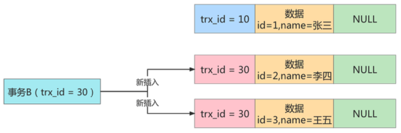
步骤3：接着事务A开启第二次查询，根据可重复读隔离级别的规则，此时事务A并不会再重新生成 ReadView。此时表student中的3条数据都满足where id>=1的条件，因此会先查出来。然后根据ReadView机制，判断每条数据是不是都可以被事务A看到。
- 首先
id=1的这条数据，前面已经说过了，可以被事务 A 看到。 - 然后是
id=2的数据，它的trx_id=30，此时事务A发现，这个值处于up_limit_id和low_limit_id之间，因此还需要再判断30是否处于trx_ids数组内。由于事务A的trx_ids=[20,30]，因此在数组内，这表示id=2的这条数据是与事务A在同一时刻启动的其他事务提交的，所以这条数据不能让事务A看到。 - 同理，
id=3的这条数据，trx_id也为30，因此也不能被事务A看见。
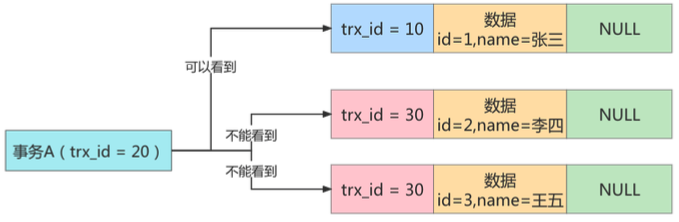
结论：最终事务A的第二次查询，只能查询出id=1的这条数据，这和事务A的第一次查询的结果一样，因此没有出现幻读现象，所以因为MVCC的作用，在MySQL的REPEATABLE READ隔离级别下，也不存在幻读问题。
10 日志
redo log
redo log重做日志：
- 是一种事务日志，提供再写入操作，恢复提交事务修改的页操作，用来保证事务的持久性。
- 是存储引擎层（InnoDB独有）生成的日志，记录的是物理级别上的页修改操作，比如页号、偏移量、写入了xx数据，主要为了保证数据的可靠性。
为什么需要redo log？
InnoDB以页为单位来管理存储空间，在真正访问页面之前，需要把在磁盘上的页缓存到内存中的Buffer pool之后才可以访问，所以变更都必须先更新缓冲池中的数据，然后缓冲池中的脏页以一定频率刷入磁盘（checkpoint机制），通过缓冲池来优化CPU和磁盘I/O之间的速率鸿沟，保证整体性能。
一方面，缓冲池可以帮助我们消除CPU和磁盘之间的鸿沟，checkpoint机制可以保证数据的最终落盘，然而由于checkpoint并不是每次变更的时候就触发，而是master线程隔一段时间才去处理。所以最坏的情况就是事务提交后，刚写完缓冲池，数据库宕机了，那么这段数据就是丢失的，无法恢复。
另一方面，事务包含持久性的特性，就是说对于一个已经提交的事务，在事务提交后即使系统发生了崩溃，这个事务对数据库中所做的更改也不能丢失。
那么如何保证这个持久性呢? 一个简单的做法：在事务提交完成之前把该事务所修改的所有页面都刷新到磁盘。但是这个简单粗暴的做法有些问题：
- 修改量与刷新磁盘工作严重不成比例：比如有时候仅仅修改了某个页面中的一个字节，InnoDB以页为单位刷新磁盘，默认页面大小16KB，刷新到磁盘的成本就不划算了。
- 随机I/O刷新较慢：一个事务包含多条语句，一条语句也可能修改多条页面，如果这些页面不相邻，意味着刷新到磁盘需要很多随机I/O，肯定比顺序I/O要慢。
另一个解决思路：我们只是想让已经提交了的事务对数据库中数据所做的修改永久生效，即使后来系统崩溃，在重启后也能把这种修改恢复出来。所以我们其实没有必要在每次事务提交时就把该事务在内存中修改过的全部页面刷新到磁盘，只需要把修改了哪些东西记录一下就好。
- 比如，某个事务将系统表空间中第10号页面中偏移量为100处的那个字节的值1改成2。我们只需要记录一下这条语句：将第0号表空间的10号页面的偏移量为100处的值更新为2。
由此，InnoDB采用了WAL技术（Write-Ahead Logging），思想是先写日志，再写磁盘，只有日志写入成功，才算事务提交成功。这里的日志就是redo log，当发生宕机且数据未刷新到磁盘的时候，可以通过redo log来恢复，保证ACID中的durability。
优势和特点
优势：
- redo log降低了刷盘频率。
- redo log占用的存储空间很小，刷盘速度快。
特点：
- redo log是顺序写入磁盘的：执行事务过程中每执行一条语句就可能产生若干redo日志，这些日志按照产生顺序写入磁盘，也就是使用顺序I/O。
- 事务执行过程中，redo log不断记录：redo log跟bin log的区别在于redo log是存储引擎层产生的，而bin log是数据库层产生的。加入一个事务对表做10万行的记录插入，在这个过程中一直不断向redo log顺序记录，而bin log不会记录，直到事务提交才会一次写入bin log文件中。
组成
- redo log buffer：保存在内存中，容易丢失。
服务器启动时向操作系统申请一大片称之为redo log buffer的连续内存空间。通过参数innodb_log_buffer_size设置，默认16M，范围是1~4096M。
内部划分为若干个连续的redo log block，一个block占512字节。
- redo log file：保存在硬盘中，是持久的。
整体流程
以一个UPDATE事务为例：
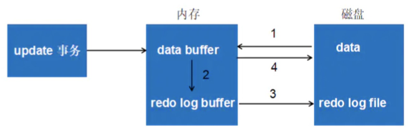
- 先将原始数据从磁盘中读入内存中来，修改数据的内存拷贝。
- 生成一条redo log并写入redo log buffer，记录的是数据被修改后的值。
- 当事务commit时，将redo log buffer中的内容刷新到redo log file，对redo log file采用追加写的方式（Write-Ahead Log预先日志持久化，在持久化一个数据页之前，先将内存中相应的日志页持久化）。
- 定期将内存中修改的数据刷新到磁盘的数据库文件中。
刷盘策略
redo log的写入并不是直接写入磁盘的，InnoDB引擎会在写redo log的时候先写redo log buffer，之后以一定频率刷入到真正的redo log file中。这里的一定频率就由刷盘策略决定。
还要注意，redo log buffer刷盘到redo log file的过程并不是真正的刷到磁盘中去，只是刷入到文件系统缓存（page cache）中去，这是现代操作系统为了提高文件写入效率做的一个优化，真正的写入时机会交给系统自己来决定。那么对于InnoDB来说实际还存在一个问题，如果交给系统来同步，同样如果系统宕机，那么数据也丢失了（虽然整个系统宕机的概率还是比较小的）。
InnoDB给出innodb_flush_log_at_trx_commit参数，该参数控制commit提交事务时，如何将redo log buffer中的日志刷新到redo log file中。它支持三种策略:
- 设置为
1：表示每次事务提交时都将进行同步刷盘操作。这是默认值。- 只要事务提交成功，redo log记录就一定在磁盘里，不会有任何数据丢失；如果事务执行过程中MySQL宕机，事务没有commit，所以日志丢了也没关系，不影响事务的durability。
- 效率是最差的，但是建议使用。
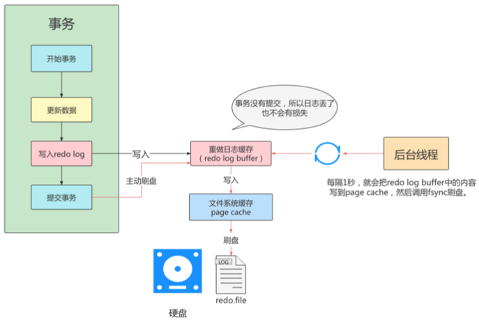
- 设置为
2：表示每次事务提交时都只把redo log buffer内容写入page cache，不进行同步。由os自己决定什么时候同步到磁盘文件。- 只要事务提交成功，redo log buffer中的内容只写入page cache。
- 仅仅是MySQL挂了不会有数据丢失，但是操作系统宕机1s内的数据就丢失了，无法满足durability，但是效率最高。
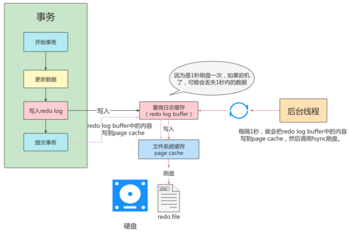
- 设置为
0：表示每次事务提交时不进行刷盘操作。系统默认master thread每隔1s异步进行一次redo log的同步。- MySQL宕机最多丢失1s内的事务。
- 是一种折中做法，I/O效率理论高于1，低于2，但也有丢失数据风险，不能保证durability。
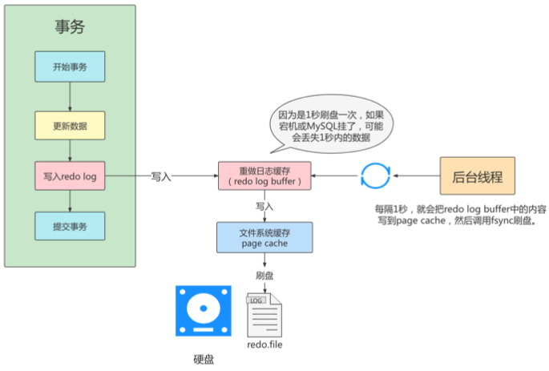
redo log file
硬盘上存储的redo log file不只一个，而是以一个日志文件组的形式出现的，每个的redo日志文件大小都是一样的。比如可以配置为一组4个文件，每个文件的大小是1GB，整个redo log日志文件组可以记录4G的内容。它采用的是环形数组形式，从头开始写，写到末尾又回到头循环写。
在个日志文件组中还有两个重要的属性：
write pos：是当前记录的位置，一边写一边后移。checkpoint：是当前要擦除的位置，也是往后推移。
每次刷盘redo log到日志文件组中，write pos位置就会后移更新；每次MySQL加载日志文件组恢复数据时，会清空加载过的redo log，并把checkpoint后移更新；write pos和checkpoint之间的还空着的部分可以用来写入新的redo log记录。

如果write pos追上checkpoint，表示日志文件组满了，这时候不能再写入新的redo log记录，MySQL得停下来清空一些记录，把checkpoint推进一下。
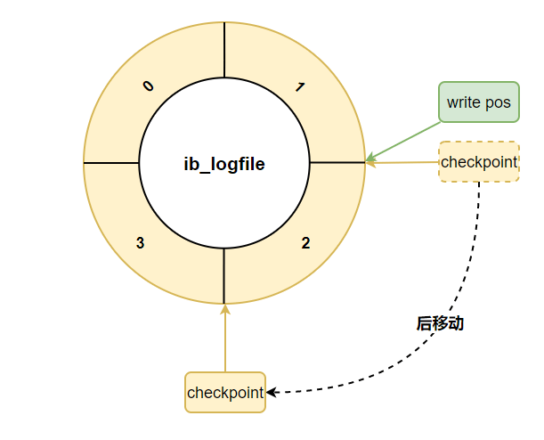undo log
undo log回滚日志：
- 也是一种事务日志，回滚记录到某个特定版本，用来保证事务的原子性、一致性。
- 也是存储引擎层（InnoDB独有）生成的日志，记录的是逻辑操作，比如某一行数据进行了INSERT，那么undo log就记录一条与之相反的DELETE操作。
- 主要用于事务的回滚（undo log记录了每个操作的逆操作）和一致性非锁定读（undo log回滚记录到某个特定版本，即MVCC）。
如何理解undo log？
事务需要保证原子性，也就是事务中的操作要么全部完成，要么什么也不做。但有时候事务执行到一半会出现一些情况，比如：
- 情况一：事务执行过程中可能遇到各种错误，比如服务器本身的错误，操作系统错误，甚至是突然断电导致的错误。
- 情况二：程序员可以在事务执行过程中手动输入ROLLBACK语句结束当前事务的执行。
以上情况出现，我们需要把数据改回原先的样子，这个过程称之为rollback回滚，这样就可以造成一个假象：这个事务看起来什么都没做，所以符合原子性要求。
比如，INSERT一条记录，至少要记录这条记录的主键，便于回滚时DELETE这条插入的记录；DELETE一条记录，至少要把记录内容记录下来，便于回滚时INSERT这条删除的记录；UPDATE一条记录，至少要把修改的内容记录下来，便于回滚时UPDATE回原来的内容。
此外，undo log也会产生redo log，因为undo log也需要持久性的保护。
作用
- 回滚数据
undo log是逻辑日志，只是将数据库逻辑地恢复为原来的样子，所有修改被逻辑性取消，但是数据结构和页在物理上和修改前可能并不完全一样。
- MVCC
undo log版本链结合行格式的隐藏列、MVCC提供的ReadView共同实现多版本并发控制。
存储结构
- 回滚段与undo页
InnoDB对undo log的管理采用segment的方式，也就是每个回滚段记录了1024个undo log segment，而在每个undo log segment段中进行undo page的申请。
回滚段与事务
- 每个事务只会使用一个回滚段，一个回滚段在同一时刻可能会服务于多个事务。
- 当一个事务开始的时候，会制定一个回滚段，在事务进行的过程中，当数据被修改时，原始的数据会被复制到回滚段。
- 在回滚段中，事务会不断填充盘区，直到事务结束或所有的空间被用完。如果当前的盘区不够用，事务会在段中请求扩展下一个盘区，如果所有已分配的盘区都被用完，事务会覆盖最初的盘区或者在回滚段允许的情况下扩展新的盘区来使用。
- 回滚段存在于undo表空间中，在数据库中可以存在多个undo表空间，但同一时刻只能使用一个undo表空间。
- 当事务提交时，InnoDB存储引擎会做以下两件事情: 将undo log放入列表中，以供之后的purge操作；判断undo log所在的页是否可以重用，若可以分配给下个事务使用。
回滚段中的数据分类
- 未提交的回滚数据(uncommitted undo information)：该数据关联的事务未被提交，用于实现读一致性，所以该数据不能被其他事务的数据覆盖。
- 已经提交但未过期的回滚数据(committed undo information)：该数据关联的事务已经提交，但是仍受到undo retention参数的保持时间影响。
- 事务已经提交并过期的数据(expired undo information)：事务已经提交且数据保存时间超过undo retention参数指定的时间，属于已过期数据，回滚段满后，会优先覆盖这部分数据。
binlog
binlog可以说是MySQL中比较重要的日志了，在日常开发及运维过程中，经常会遇到。
binlog即binary log，二进制日志文件，也叫作变更日志(update log)。它记录了数据库所有执行的DDL和DML等数据库更新事件的语句，但是不包含没有修改任何数据的语句(如数据查询语句select、show等)。
binlog的主要应用场景是数据恢复和数据复制。
记录格式
binlog日志有三种格式，可以通过binlog_format参数指定。
- statement
记录的内容是SQL语句原文，比如执行一条update T set update_time=now() where id=1，记录的内容如下：

同步数据时，会执行记录的SQL语句，但是有个问题，update_time=now()这里会获取当前系统时间，直接执行会导致与原库的数据不一致。
- row
为了解决上面的问题，需要指定记录格式为row，记录的内容不再是简单的SQL语句了，还包含操作的具体数据，记录内容如下：

这样就能保证同步数据的一致性，通常情况下都是指定为row，这样可以为数据库的恢复与同步带来更好的可靠性。但是这种格式，需要更大的容量来记录，比较占用空间，恢复与同步时会更消耗I/O资源，影响执行速度。
- mixed
所以有了折中方案mixed，记录的内容是前两者的混合。MySQL会判断这条SQL语句是否可能引起数据不一致，如果是就用row格式，否则就用statement格式。
写入机制
binlog的写入时机也非常简单，事务执行过程中，先把日志写到binlog cache，事务提交的时候，再把binlog cache写到binlog文件中。
因为一个事务的binlog不能被拆开，无论这个事务多大，也要确保一次性写入，所以系统会给每个线程分配一个块内存作为binlog cache。
可以通过binlog_cache_size参数控制单个线程binlog cache大小，如果存储内容超过了这个参数，就要暂存到磁盘（Swap）。
binlog刷盘流程：

- 上图的
write，是指把日志写入到文件系统的page cache，并没有把数据持久化到磁盘，所以速度比较快。 - 上图的
fsync，才是将数据持久化到磁盘的操作。
write和fsync的时机，可以由参数sync_binlog控制，默认是0。
- 为0的时候，表示每次提交事务都只
write，由系统自行判断什么时候执行fsync。虽然性能得到提升，但是机器宕机，page cache里面的 binlog 会丢失。虽然性能得到提升，但是机器宕机，page cache里面的 binlog 会丢失。 - 为了安全起见，可以设置为1，表示每次提交事务都会执行fsync，就如同redo log同步刷盘。
- 最后还有一种折中方式，可以设置为N(N>1)，表示每次提交事务都write，但累积N个事务后才fsync。在出现IO瓶颈的场景里，将sync_binlog设置成一个比较大的值，可以提升性能。同样的，如果机器宕机，会丢失最近N个事务的binlog日志。
binlog与redo log比较
binlog和redo log都属于持久化的保证，但是侧重点不同。
- redo log是物理日志，记录内容是“在某个数据页上做了什么修改”；属于InnoDB存储引擎层产生的；redo log让InnoDB存储引擎拥有了崩溃恢复能力；redo log在事务执行过程中可以不断写入。
- 而binlog是逻辑日志，记录内容是语句的原始逻辑，类似于“给ID=2这一行的c段加1”；属于Server层；保证了MySQL集群架构的数据一致性；binlog只有在提交事务时才写入。
两阶段提交
redo log与binlog两份日志之间的逻辑不一致，会出现什么问题？以update语句为例，假设id=2的记录，字段c值是0，把字段c值更新成1，SQL语句为update T set c=1 where id=2。
假设执行过程中写完redo log日志后，binlog日志写期间发生了异常，会出现什么情况呢？

由于binlog没写完就异常，这时候binlog里面没有对应的修改记录，因此之后用binlog日志恢复数据时，就会少这一次更新，恢复出来的这一行c值是0，而原库因为redo log日志恢复，这一行c值是1，最终数据不一致。

为了解决两份日志之间的逻辑一致问题，InnoDB存储引擎使用两阶段提交方案。
原理很简单，将redo log的写入拆成了两个步骤prepare和commit：

使用两阶段提交后，写入binlog时发生异常也不会有影响，因为MySQL根据redo log日志恢复数据时，发现redo log还处于prepare阶段，并且没有对应binlog日志，就会回滚该事务。

再看一个场景，redo log设置commit阶段发生异常，那会不会回滚事务呢？

并不会回滚事务，它会执行上图框中的逻辑，虽然redo log是处于prepare阶段，但是能通过事务id找到对应的binlog日志，所以MySQL认为是完整的，就会提交事务恢复数据。
其他日志
MySQL有6类日志分别为:
- 慢查询日志:记录所有执行时间超过long_query_time的所有查询，方便我们对查询进行优化。
- 通用查询日志: 记录所有连接的起始时间和终止时间，以及连接发送给数据库服务器的所有指令，对我们复原操作的实际场景、发现问题，甚至是对数据库操作的审计都有很大的帮助。
- 错误日志: 记录MySQL服务的启动、运行或停止MySQL服务时出现的问题，方便我们了解服务器的状态，从而对服务器进行维护。
- 二进制日志: 记录所有更改数据的语句，可以用于主从服务器之间的数据同步，以及服务器遇到故障时数据的无损失恢复。
- 中继日志: 用于主从服务器架构中，从服务器用来存放主服务器二进制日志内容的一个中间文件。从服务器通过读取中继日志的内容，来同步主服务器上的操作。
- 数据定义语句日志: 记录数据定义语句执行的元数据操作。
11 主从复制
中继日志(relay log)
relay log只在主从服务器架构的从服务器上存在。从服务器为了与主服务器保持一致，要从主服务器读取binlog的内容，并且把读取到的信息写入本地的日志文件中，这个从服务器本地的日志文件就叫relay log。然后，从服务器读取中继日志，并根据中继日志的内容对从服务器的数据进行更新，完成主从服务器的数据同步。
搭建好主从服务器之后，中继日志默认会保存在从服务器的数据目录下：
- 文件名格式：
从服务器名-relay-bin.序号 - 还有一个索引文件：
从服务器名-relay-bin.index，用来定位当前正在使用的中继日志。
如何提升数据库的并发能力？
首先考虑的是优化SQL查询语句和索引，这是成本最小的方案。
其次，实际工作中，常将Redis作为缓存与MySQL配合使用，当有请求时，首先从缓存中进行查找，如果存在就取出，不存在再访问数据库，提升了读取的效率，也减少了对后端数据库的访问压力。
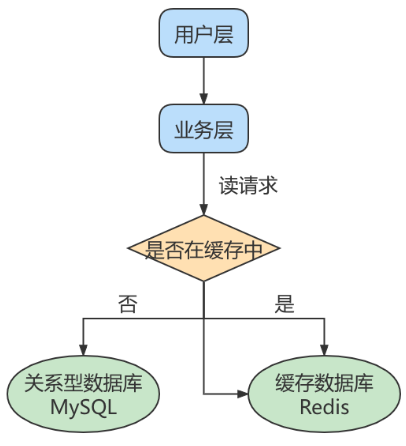
- 最后，一般对于数据库而言都是「读多写少」，也就是说对数据库读取数据的压力比较大，因此可以采取数据库集群方案，做主从架构，实现读写分离。但是主从架构本身也是有成本的。
主从复制的作用
- 读写分离
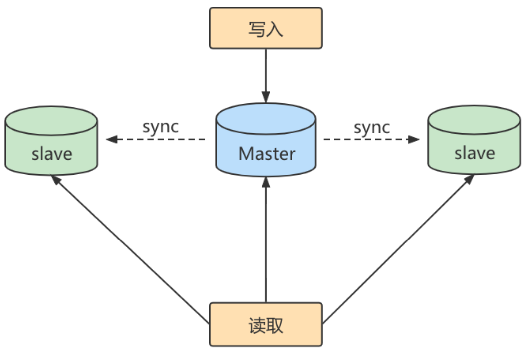
- Master主库：写库，负责写入数据。
- Slave从库：读库，负责读取数据。
当主库进行更新时，会主动将数据复制到从库中，在客户端读取数据时，就会从从库中进行读取。
面对「读多写少」的场景，读写分离可以实现更高的并发访问，同时还能对服务器进行负载均衡，让不同的读请求按照策略均匀分发到不同的从服务器上，让读取更加顺畅。
- 数据备份
通过主从复制将主库数据复制到从库上，实现了热备份机制，即在主库正常运行的情况下进行的备份，不会影响到服务。
- 高可用
数据备份这种冗余机制使得当服务器出现宕机或故障情况下，可以切换到从服务器上，保证服务的正常运行。
主从复制原理
主从同步的原理就是基于binlog进行数据同步。在主从复制过程中，会基于3个线程来操作，一个主库线程，两个从库线程。
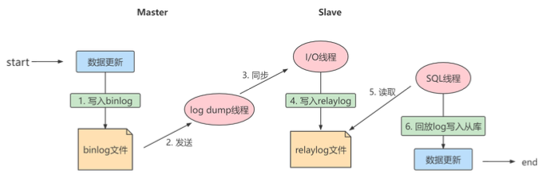
- binlog dump thread（二进制日志转储线程）：主库线程，当从库线程连接时，主库可以将binlog发送给从库，当主库读取binlog时，会在binlog上加锁，读取完成后，再将锁释放掉。
- I/O thread（从库I/O线程）：从库线程，连接到主库，向主库发送请求更新binlog。这时从库的I/O线程就可以读取到主库的binlog dump thread发送的binlog更新部分，并且拷贝到本地的relay log。
- SQL thread（从库SQL线程）：读取从库中的relay log，并且执行日志中的事件，将从库中的数据与主库保持同步。
复制三步骤：
- Master将写操作记录到binlog；
- Slave将Master的binlog events拷贝到它的relay log；
- Slave重做relay log中的事件，将改变应用到自己的数据库中。MySQL复制是异步的且串行化的，而且重启后从接入点开始复制。
复制的原则：
- 每个Slave只有一个Master。
- 每个Slave只能有一个唯一的服务器ID。
- 每个Master可以有多个Slave。
复制的最大问题: 延时
同步数据一致性问题
主从同步的要求：
- 读库和写库的数据一致(最终一致)。
- 写数据必须写到写库。
- 读数据必须到读库(不一定)。
主从延迟
主从延迟是指主机数据更新完成到从机上的数据更新完成存在一定延迟的问题。
主从延迟的原因：
- 在网络正常的时候，日志从主库传给从库所需的时间是很短的，主备延迟的主要来源是备库接收完binlog和执行完这个事务之间的时间差。
- 主备延迟最直接的表现是，从库消费中继日志(relay log)的速度，比主库生产binlog的速度要慢。造成这个现象的原因可能是从库的机器性能比主库要差，从库的压力大，大事务（比如一次删除或插入太多数据）的执行。
如何减少主从延迟：
- 降低多线程大事务并发的概率，优化业务逻辑。
- 优化SQL，避免慢SQL，减少批量操作，建议写脚本以update-sleep这样的形式完成。
- 提高从库机器的配置，减少主库写binlog和从库读binlog的效率差。
- 尽量采用短链路，即主库和从库机器的距离尽量短，并提升端口带宽，减少binlog传输的网络延时。
- 实时性要求的业务读强制走主库，从库只做灾备，备份。
如何解决一致性问题
进行主从同步的内容是binlog，它是一个文件，在进行网络传输和从机执行事务的过程中就一定会存在主从延迟，这样就可能造成用户在从库上读取的数据不是最新的数据，也就是主从同步中的不一致性问题。
如果读取数据也走主库，那么对数据进行更新的时候，可以对记录加写锁，这样在就不会发生数据不一致的情况。但这时从库的作用就只是备份数据，并没有起到读写分离，分担主库读压力的作用。
读写分离情况下，解决主从同步中数据不一致的问题，就是解决主从之间数据复制方式的问题，如果照数据一致性从弱到强来进行划分，有以下3种复制方式：
- 异步复制
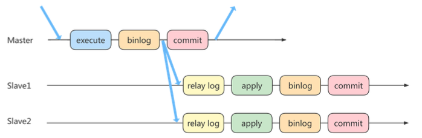
默认的方式。客户端提交commit之后，主库不需要等从库返回任何结果，而是直接将结果返回给客户端。好处是不会影响主库写的效率，但可能会存在主库宕机，binlog没有同步到从库的情况，此时主库和从库数据就不一致了，这时从机中选择一个作为新的主机，那么新主机就缺少了之前主机中已经提交的事务。所以这种复制模式下数据一致性是最弱的。
- 半同步复制
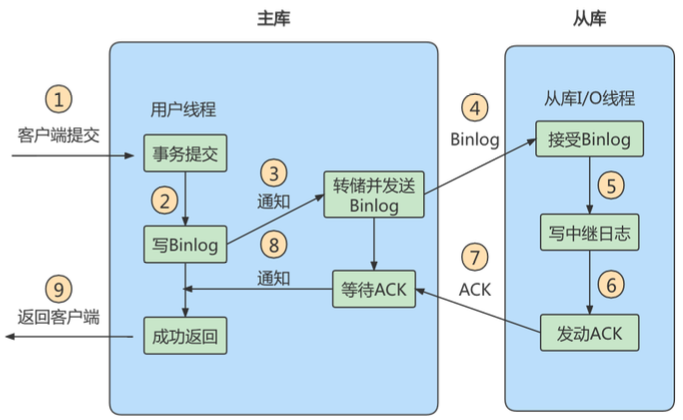
5.5之后开始支持半同步复制方式。原理是在客户端提交commit之后不直接将结果返回客户端，而是等待至少有一个从库接收到binlog并成功写入relay log后，再返回给客户端。好处是提高了数据的一致性，但是相比于异步复制至少增加了一个网络连接的延迟，降低了主库写的效率
5.7开始还增加了参数rpl_semi_sync_master_wait_for_slave_count，可以对应答从库的数量进行设置，默认值为1，表示只要有一个1从库响应了就可以返回给客户端。调大这个参数可以提升数据的一致性，但是也增加了主库等待从库响应的时间。
- 组复制
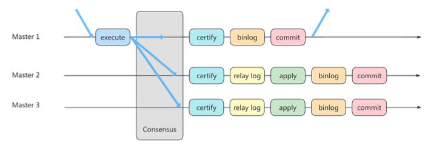
组复制技术，简称MGR(MySQL Group Replication)是MySQL在5.7版本中推出的一种新的数据复制技术，MGR将MySQL带入了数据强一致性的时代，是一个划时代的创新，其中一个重要的原因就是MGR是基于Paxos协议的，事实上，Paxos算法提出来之后就作为分布式一致性算法被广泛应用，比如Apache的ZooKeeper也是基于Paxos实现的。
首先我们将多个节点共同组成一个复制组，在执行读写(RW)事务的时候，需要通过一致性协议层 (Consensus层)的同意，也就是读写事务想要进行提交，必须要经过组里“大多数人”(对应Node 节点)的同意，大多数指的是同意的节点数量需要大于(N/2+1)，这样才可以进行提交，而不是原发起方一个说了算。而针对只读(RO)事务则不需要经过组内同意，直接COMMIT即可。
在一个复制组内有多个节点组成，它们各自维护了自己的数据副本，并且在一致性协议层实现了原子消息和全局有序消息，从而保证组内数据的一致性。
参考资料：
最后更新： 2023年01月01日 20:07
原始链接： http://muquanrui.com/2022/06/04/Computer%20Science/Database/MySQL/MySQL%E5%85%AB%E8%82%A1%E6%96%87/